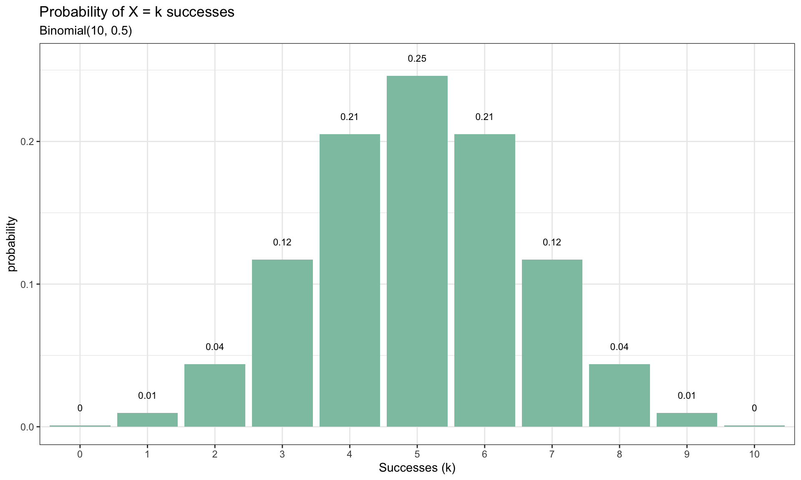

Categorical Data Analysis
Overview
- Basic Probability Review
- Discrete Distributions
- Bernoulli
- Binomial
- Poisson
- Contingency Tables
- Chi-square goodness of fit test
- Chi-square test of independence
Basic Probability Review
Definitions
The sample space is the set of all the possible outcomes of an experiment. A sample space will be denoted by \(S\)
Any subset of of a sample space is called an event
Example
Flip a coin three times. The sample space is then \[ S = \{HHH, HHT, HTH, THH, HTT, THT, TTH, TTT \} \] There are eight possible outcomes in this experiment
Define the event \(\,A=\) observing two heads in three coin tosses.
Recall, the sample space is \[ S = \{HHH, HHT, HTH, THH, HTT, THT, TTH, TTT \} \]
Then the probability of observing this event is \[ P(A) = \frac{|A|}{|S|} = \frac{3}{8} \] where \(|\cdot|\) denotes the cardinality of a set
Random Variables
A random variable, usually denoted by an upper case \(X\), is a variable whose possible values are numerical outcomes of a random phenomenon (Experiment)
There are two types of random variables, discrete and continuous.
For today’s discussion we will only focus on discrete random variables
A random variable \(X\) is said to be discrete if it can assume only a finite or countably infinite number of distinct values
Example
Flip a coin three times. \[ S = \{HHH, HHT, HTH, THH, HTT, THT, TTH, TTT \} \] Define \(X =\,(\)number of heads\()\), and \(Y = \,(\)number of heads - number of tails \()\) \[ \begin{align*} X(HHH) = 3, \quad X(HTH) = 2 \\ Y(HHH) = 3, \quad Y(HTH) = 1 \end{align*} \]
Bernoulli Distribution
The Bernoulli distribution is a discrete probability distribution that models a single binary outcome or a “success” or “failure” event
In order to model an experiment through a Bernoulli distribution, all of the following conditions must hold
- There are only two possible outcomes for an experiment or trial. A success and the other as a failure.
- The probability of success, denoted as \(p\), represents the likelihood of the desired outcome occurring. The probability of failure is calculated as \(1 - p\).
- Each trial is assumed to be independent, meaning that the outcome of one trial does not affect the outcome of any other trial.
- The probability of success remains constant across all trials.
Bernoulli Probability Mass Function
Given a random variable \(X\) following a Bernoulli distribution, \(X \sim Ber(p)\). Its probability mass function is given by \[ P(X = k) = p^k\, (1-p)^{1-k} \] for \(k \in \{0,1\}\) and \(p \in [0,1]\)
- \(\mathbb{E}(X) = p\)
- \(Var(X) = p(1-p)\)
Binomial Distribution
The binomial distribution is a probability distribution that models the number of successes in a fixed number of independent Bernoulli trials.
Binomial Coefficient
The number of of combinations of \(n\) objects taken \(k\) at a time is the number of subsets, each of size \(k\) , that can be formed from the \(n\) objects is denoted by \[ \binom{n}{k} = \frac{n !}{k! (n-k)!} \] for a pair of integers \(n \geq k \geq 0\). This is known as the binomial coefficient
Example: Choosing 3 desserts from a menu of 10 items \(\binom{10}{3} = \frac{10!}{3! (10-3)!} = 120\)
Binomial Probability Mass Function
Given a random variable \(X\) following a binomial distribution, \(X \sim B(n,p)\). The probability of obtaining exactly \(k\) successes in \(n\) independent Bernoulli trials is given by the following probability mass function \[ P(X = k) = \binom{n}{k} \, p^k\, (1-p)^{n-k} \] for a pair of integers \(n \geq k \geq 0\) and \(p \in [0,1]\)
Interpretation: The probability of having \(k\) successes is \(p^k\) and the probability of having \((n-k)\) failures is \((1-p)^{n-k}\)
The \(k\) successes can occur at any position among the \(n\) trials, and there are \(\binom{n}{k}\) ways to distribute the successes in the sequence of trials
In order to model an experiment through a binomial distribution, all of the following conditions must be satisfied
- There are a fixed number of \(n\) trials
- The trials are independent of one another
- For each trial, the event of interest represents one of two outcomes (success or failure)
- The probability of “success” \(p\) is the same on each trial
The Bernoulli distribution is a special case of the binomial distribution with \(n=1\)
- \(\mathbb{E}(X) = np\)
- \(Var(X) = np(1-p)\)
Binomial Distribution: Example
Consider (again) the scenario of flipping a fair coin three times.
\[ S = \{HHH, HHT, HTH, THH, HTT, THT, TTH, TTT \} \] The event \(\,A\) = observing two heads in three coin tosses, then \(P(A) = \frac{|A|}{|S|} = \frac{3}{8}\)
Given the following conditions,
- We have a fixed number of trials, which is three coin flips
- Each coin flip is assumed to be independent of the others. The outcome of one flip does not affect the outcome of the other flips.
- In this case, the two possible outcomes are heads (H) and tails (T).
- Assuming a fair coin, the probability of getting heads (success) on any single flip is 0.5, and the probability of getting tails (failure) is also 0.5
we can model the number of heads obtained in three coin flips using a binomial distribution
Let \(\, X=\) number of heads in three fair coin tosses. Since the coin is fair, the probability of obtaining heads (success) is \(p = \frac{1}{2}\). Therefore, \(\,X\sim B\left(n=3,p=\frac{1}{2}\right)\) and we are interested in observing two heads
\[ \begin{align*} P(X = k) &= \binom{n}{k} \, p^k\, (1-p)^{n-k} \\[2pt] P(X=2) &= \binom{3}{2} \left(\frac{1}{2} \right)^2 \left(\frac{1}{2} \right)^{3-2} \\[2pt] &= \frac{3!}{2! \,1!} \left(\frac{1}{2} \right)^3 \\[2pt] &= \frac{3}{8} \end{align*} \]
While the previous example was simple, consider a scenario where you are flipping a coin ten times. In such cases, it becomes impractical and time-consuming to manually list out all the possible combinations of coin tosses \((|S| = 1024)\)
\(X \sim B(n=10,p=\frac{1}{2})\), and we are interested in calculating the probability of observing four heads. This can easily be done
\[ \begin{align*} P(X = 4) &= \binom{10}{4} \left(\frac{1}{2}\right)^{4} \left( \frac{1}{2} \right)^{10-4} \\[5pt] &= \frac{10!}{4!(10-6)!} \left( \frac{1}{2} \right)^{10} \\[5pt] &= \frac{210}{1024} \end{align*} \]
We can calculate the remaining probabilities of obtaining \(k\) heads
Poisson Distribution
The Poisson distribution helps us understand the frequency of events occurring within a specific time or space interval. It provides the probability of observing a certain number of events when the average rate of occurrence is known.
Poisson Probability Mass Function
Given a random variable \(X\) following a Poisson distribution, \(\,X \sim Pois(\lambda)\), with parameter \(\lambda >0\). The probability of observing \(k\) occurrences is given by the following probability mass function \[ P(X = k) = \frac{\lambda^k e^{-\lambda}}{k!} \] for \(k = (0,1,2,\dots)\)
If \(\,X \sim Pois(\lambda)\), then both expectation \(\mathbb{E}(X)\) and \(Var(X)\) are equal to \(\lambda\) That is, the spread or variability of the Poisson distribution is directly determined by the average rate \((\lambda)\) of an event occurrence
For Poisson distribution the following are considered
- The events of occurrences must be independent of each other
- The events must occur at a constant average rate throughout the specified interval
- It is important to ensure that the average rate of occurrence is relatively low, so that multiple events happening simultaneously or in quick succession is unlikely.
Poisson Distribution: Example
Consider a scenario where you have a service facility, such as a call center, or helpdesk, and you want to model the number of customers arriving at the facility during a specific time period
Let’s say from previous data on customer arrivals you find that, on average, you receive 10 customer arrivals per hour
- What is \(\lambda\) ?
- What is the probability of having exactly 8 customers arrive during the next hour ?
Distributions in R
Each probability distribution in R is associated with four functions which follow a naming convention
- the probability density/mass function always begins with
‘d’, - the cumulative distribution function always begins with
‘p’, - the inverse cumulative distribution (or quantile function) always beings with
‘q’, - function that produces random variables always begins with
‘r’.
Below is an example using the Binomial distribution
| Function | Description | Usage |
|---|---|---|
dbinom |
Binomial density (Probability Mass Function) | dbinom(x=1,size=10,prob=0.5) |
pbinom |
Binomial distribution (Cumulative Distribution Function) | pbinom(q=4,size=10,prob=0.5) |
qbinom |
Quantile function of the Binomial distribution | qbinom(p=0.5,size=10,prob=0.5) |
rbinom |
Binomial random number generation | rbinom(n=10,size=10,prob=0.5) |